Je travaille avec des univers, des métaphores, des objets. Chaque session est conçue sur mesure - Lego, Kapla, cartels, maquettes, arbres de postures... L'important, c'est que chacun entre dans l'expérience à sa façon et en reparte transformé.
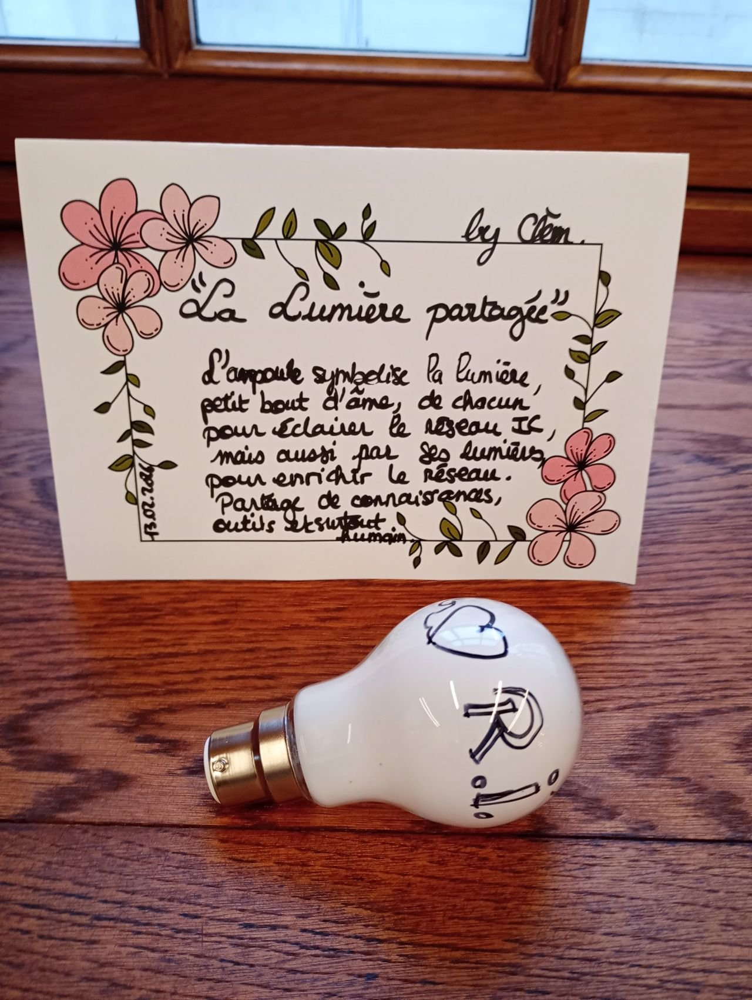
La Cité du Vitrail transformée en musée éphémère
Retrouver des agents formés à l'IC pour un point d'étape du réseau interne. Plutôt qu'une réunion classique, j'ai créé un "musée vivant" - le simple fait d'inviter les participants à "venir créer un musée" a suffi à déclencher quelque chose. Ils sont arrivés avec un esprit déjà ouvert, curieux, créatif.
Le Musée des Métaphores a été un moment fort : chaque objet déposé devenait une histoire, une intention. Dans ces cartels improvisés, on retrouvait tout - la puissance de l'IC, la sécurité psychologique, la posture du facilitateur qui accueille sans juger, relie sans forcer, éclaire sans prendre la lumière.
Un musée qui n'a existé que 3 heures… mais qui a laissé des traces très concrètes.
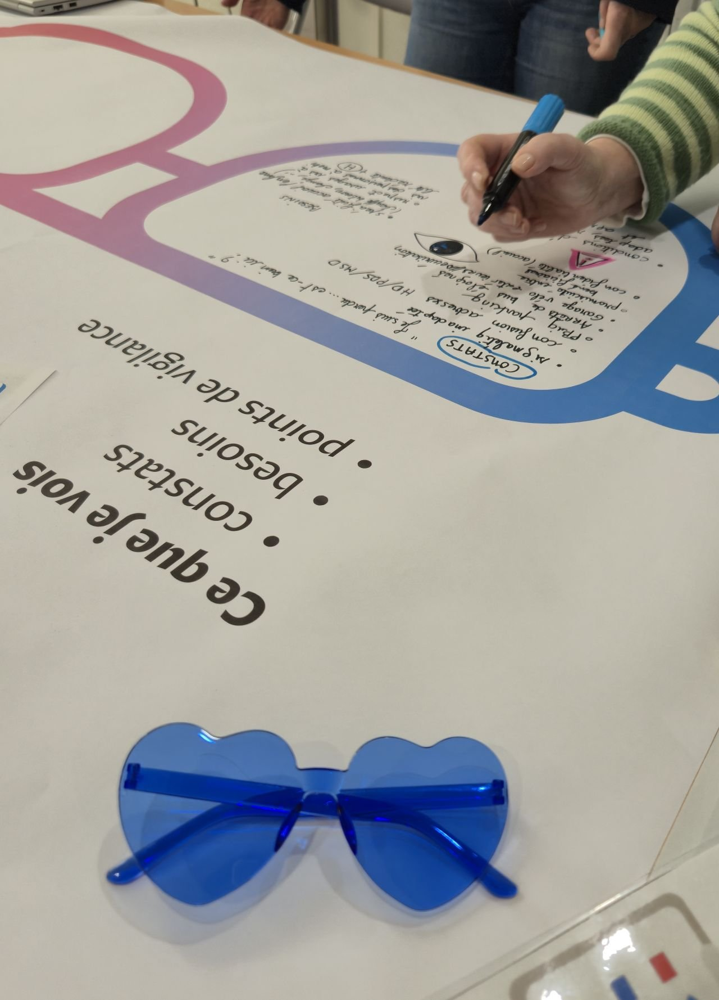
Changer de lunettes, littéralement
Animer un atelier de design collectif à partir de la restitution d'un questionnaire sur les usages et besoins de réhabilitation de locaux. Plutôt que de rester dans les données, nous avons choisi de changer de lunettes - littéralement.
En adoptant tour à tour les lunettes du public, des agents, de la coopération et du bien-être, le groupe a exploré les futurs espaces comme un designer explore un problème : en déplaçant le regard, en rendant visibles les évidences cachées.
Moins d'interprétations, plus d'observations. Moins de solutions toutes faites, plus d'intentions partagées.
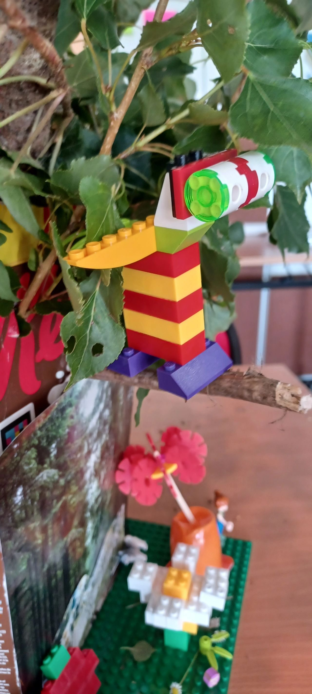
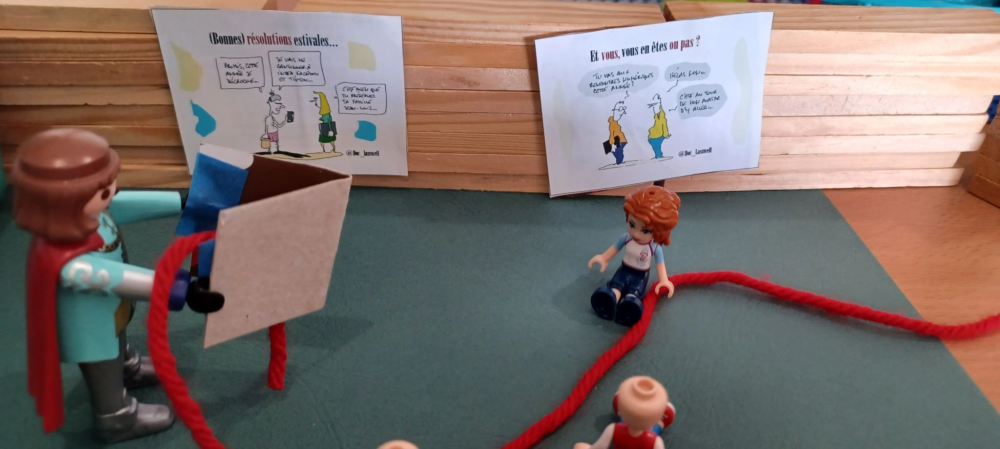
Les 4 saisons - bilan créatif de formation
Dernières séquences de la formation Intelligence Collective en intra pour les collègues du Département de l'Aube. Une équipe hors norme, où la bienveillance, la bonne humeur et la créativité ont été de rigueur.
Libre cours à la créativité pour le bilan de formation : Lego, Kapla, découpage, collage, dessin, Playmobil... Les participants ont construit des univers entiers pour raconter ce qu'ils avaient vécu et retenu.
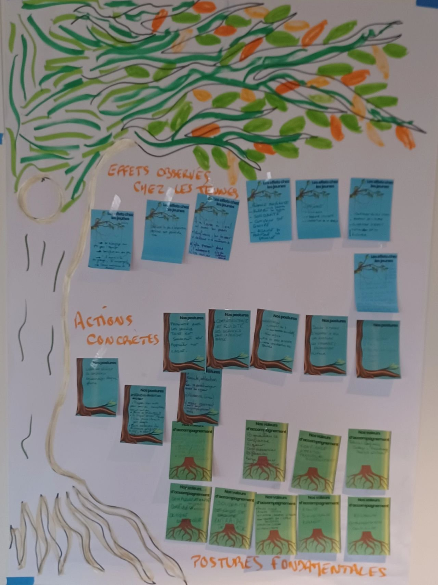
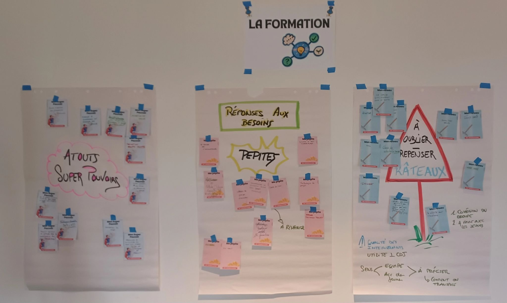
Atouts Super Pouvoirs, Pépites & Râteaux
Animer un bilan de mi-mandat avec les animateurs du Conseil Départemental Jeunes - pas en cochant des cases, mais en faisant parler le terrain, le vécu, l'engagement au quotidien.
Un radar de cohésion construit en live, des retours d'expérience, des prises de recul. Et ce virage subtil où on passe de "On fait ce qu'on peut" à "On sait ce qu'on fait, et pourquoi on le fait."
Constat partagé en fin de séance : le CDJ, ce n'est pas qu'un projet jeunes. C'est aussi une équipe d'adultes engagés qui tiennent un cap ensemble.

Un laboratoire d'idées en 3 dimensions
Accompagner un groupe incroyable en formation sur l'intelligence collective. Leur engagement, leur curiosité et leur envie d'expérimenter la co-création ont transformé chaque séquence en un véritable laboratoire d'idées.
Ensemble, ils ont montré que l'intelligence collective n'est pas seulement une méthode : c'est une posture, une énergie partagée qui permet de faire émerger des solutions créatives, concrètes et durables.
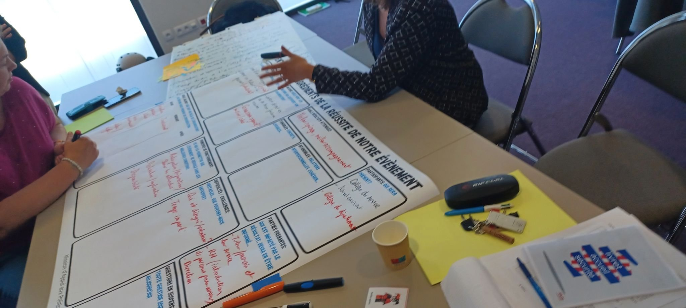
Et si on repensait l'onboarding ?
Une demi-journée pour faire diverger et converger autour d'une question concrète : repenser l'intégration des nouveaux agents dans la collectivité. Sur un support XXL posé à plat, les participants construisent ensemble les ingrédients de la réussite - en rouge et en bleu, les idées s'accumulent, se croisent, se complètent.
La facilitation au service d'un enjeu RH concret : aller plus loin, ensemble, en une seule matinée.
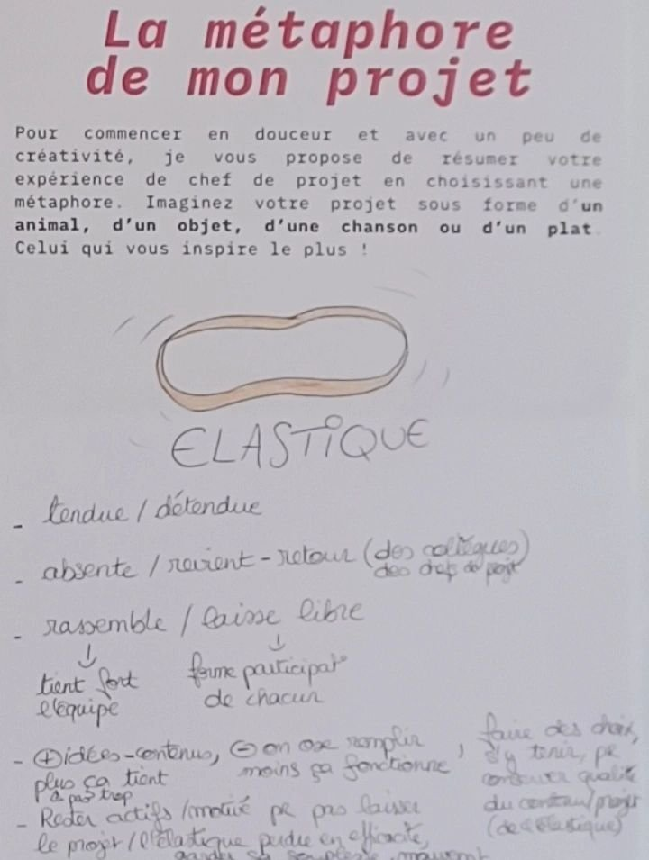
Oser la métaphore - "Mon projet, c'est un élastique"
Accompagner 7 professionnelles du social sur leur projet social de territoire. Après une première journée sur la posture de chef de projet et la méthodologie en intelligence collective, retour quelques mois plus tard pour aller plus loin.
En préalable : je leur ai demandé de réfléchir à leur projet et d'oser la métaphore. L'une d'elles a choisi l'élastique - tendu/détendu, absent/revient, rassemble/laisse libre. Quand la créativité s'en mêle, des vérités profondes émergent sur la posture de chef de projet.
Retours d'expériences, introspection sur la posture, co-construction d'une fiche projet idéale... Tout cela en intelligence collective.

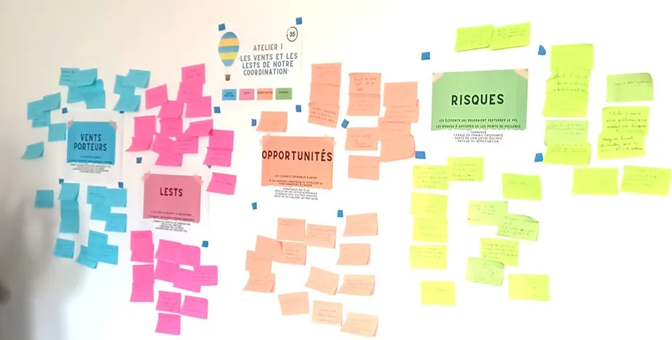
Prendre de la hauteur sur nos moyens et notre organisation
Un univers entier créé sur mesure autour de la montgolfière pour accompagner les animateurs du Conseil Départemental Jeunes dans leur travail de coordination et de gestion du temps.
Le Plan de vol, les Vents porteurs, les Lests, les Opportunités, les Risques... Chaque concept prend vie dans la métaphore. Les participants ne réfléchissent plus à leur organisation - ils pilotent leur montgolfière.
Des supports entièrement conçus pour cette commande, de l'inclusion jusqu'à l'atterrissage.
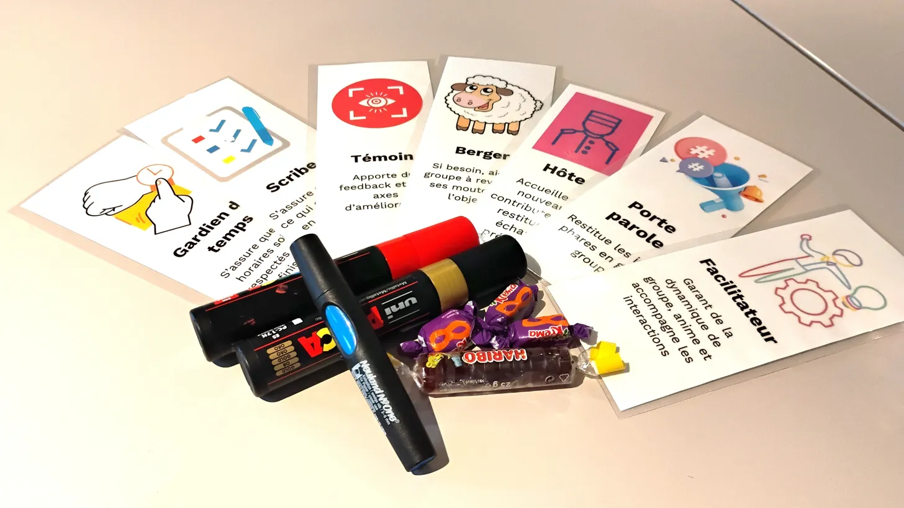
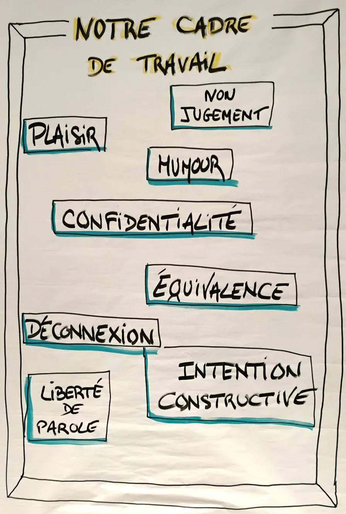
Des outils pensés pour faire vivre le collectif
Chaque formation est préparée avec soin : des cartes de rôles (Scribe, Témoin, Berger, Hôte, Porte-parole, Facilitateur), un cadre de travail co-construit avec le groupe, des supports visuels pensés pour que chacun trouve sa place.
Le cadre de travail - Plaisir, Humour, Confidentialité, Équivalence, Déconnexion, Liberté de parole, Intention constructive - est co-construit en début de session. Ce n'est pas un règlement affiché, c'est un contrat vivant.

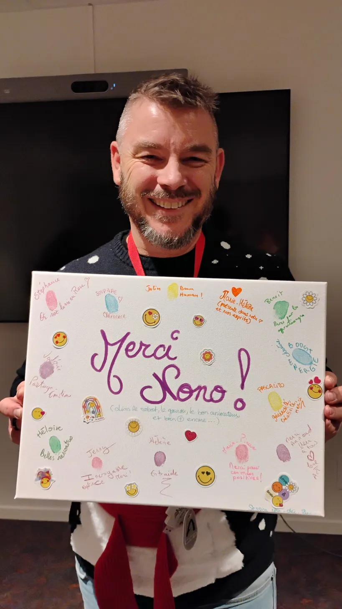
"Merci Nono !" - Quand les participants offrent leur reconnaissance
À la fin du dernier cycle de formation Intelligence Collective, les participants ont créé ce tableau collectif - avec leurs empreintes, leurs prénoms, leurs mots. "Colibris de robot, le gourou, le bon animateur, et bien + encore..."
C'est peut-être la plus belle preuve que quelque chose s'est passé. Pas une évaluation à chaud. Un geste. Un tableau. Une mémoire collective.
Incroyable espace. Belles rencontres. Entraide. Ondes positives. - quelques mots écrits par les participants sur ce tableau.

Le Voyage du Primo - Réinventer le premier jour dans la collectivité
Passer d'une logique "on accueille" à une logique "on conçoit une expérience de décollage qui donne envie". Un atelier entièrement construit autour d'une métaphore spatiale.
Les participants ont endossé la combinaison de l'astronaute pour ressentir l'expérience du primo dès le décollage - puis cartographié le voyage : chaque moment clé (accueil café, kit, RH, déjeuner...) est devenu une planète à explorer, avec ses intentions et ses émotions associées.
Repérer les étoiles et les trous noirs, prototyper des formats vivants (mini escape, fresques, objets-symboles), puis s'engager collectivement sur ce qui va décoller. Des idées abstraites transformées en expériences concrètes et testables.

Quand l'intelligence collective façonne les managers de demain
Du 25 au 27 mars 2026, l'IRTS de Champagne-Ardenne accueille un événement unique : 22 apprenants CAFERUIS et 45 étudiants belges en Master en Ingénierie et Action Sociales (HEPL et HELMo, Liège) se retrouvent pour trois jours d'échanges, d'ateliers et d'outils dédiés à l'intelligence collective.
Au programme : des rencontres inspirantes entre futurs managers français et belges, des ateliers collaboratifs et des outils concrets pour développer des compétences clés - le tout facilité et animé en intelligence collective.
Objectif : renforcer les liens entre étudiants, partager des bonnes pratiques et innover ensemble.
Vous voulez vivre une expérience similaire ?
Chaque projet est unique - parlons du vôtre et construisons quelque chose ensemble.
Parlons de votre projet →